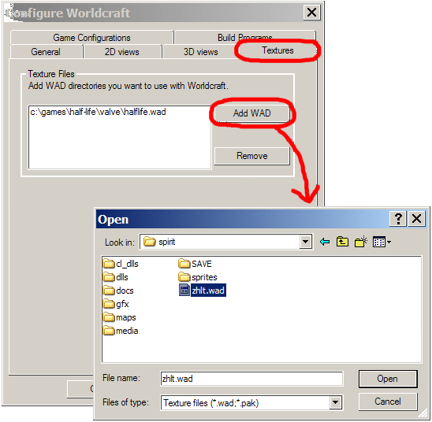

Next, click the Edit button, then click Add in the window that comes up. Type "Spirit" as the name of your new Game Configuration, and press return.
The "Edit Game Configurations" window should now show Spirit in your list of Game Configurations. Close this window.
Choose Spirit from the pull-down list of Configurations, and now we can start filling in the details.
First, click the Add button to add a new Game Data file. Select spirit.fgd, which was installed in the 'spirit' subdirectory of your Half-Life folder.
The other fields can now be filled in. Here's what I wrote for each one. Obviously, if your copy of Half-Life
isn't installed in C:\Games, you'll need to change these as appropriate.
If you want to fill in the "RMF Directory" field, go ahead... but it doesn't really matter.
We've finished with the Game Configurations tab now. Click on the Build Programs tab, and select your Spirit configuration from the new pull-down menu. (IMPORTANT: Don't forget to select Spirit at this point!) All the fields in the window will go blank, ready for you to fill in.
Fill in all the details, like you did on the Game Configurations tab. When selecting CSG, BSP, VIS and RAD, make sure you use the ones in the 'spirit' subdirectory of your Half-Life folder.
We're nearly finished now. Open the Textures tab, and click "Add WAD". Select zhlt.wad, which (like everything else!) is in the 'spirit' subdirectory of your Half-Life folder.

Well, you'll be pleased to hear that we've now finished with the Worldcraft Configuration window. Click OK to close it, and you can start making maps!
There's just one last thing to mention. When you're ready to test your map, type "-game spirit" into the Additional Game Parameters field in Worldcraft. This tells the game to use Spirit when the map runs.
That's all, folks! Now that you're ready to make Spirit maps, you may wish to have a look at the Features page, to get a feel for the new options available to you.
| © Laurie Cheers 2002 |